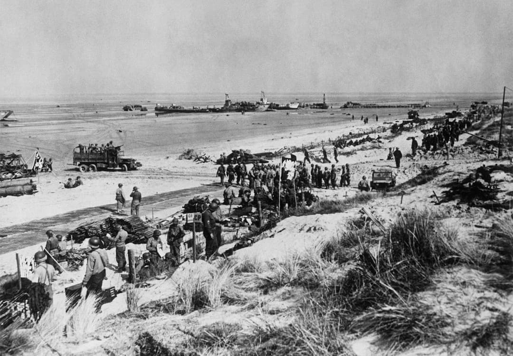
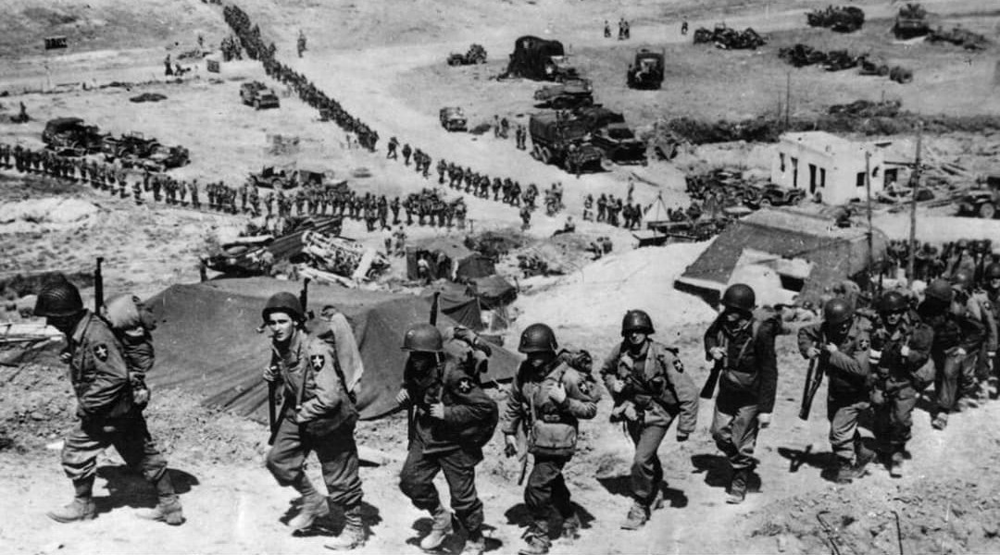
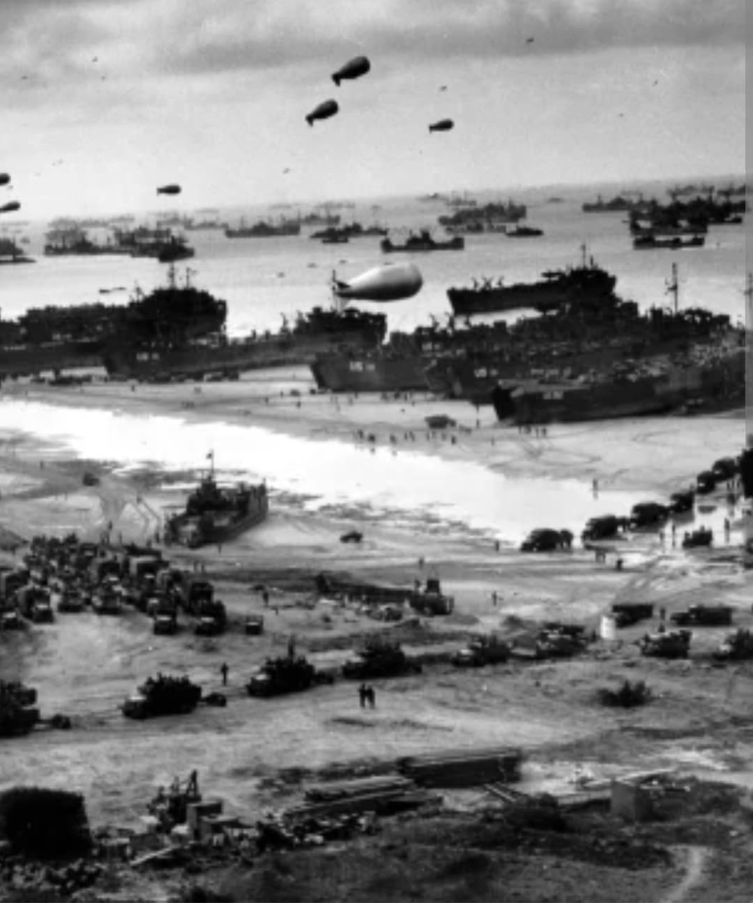
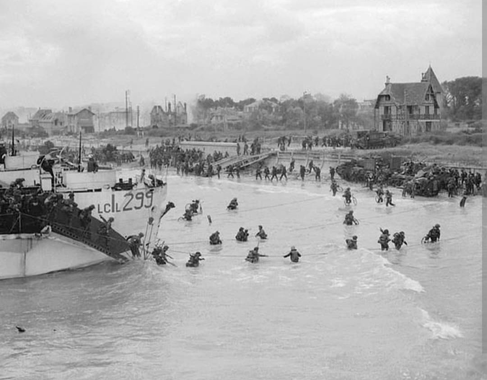
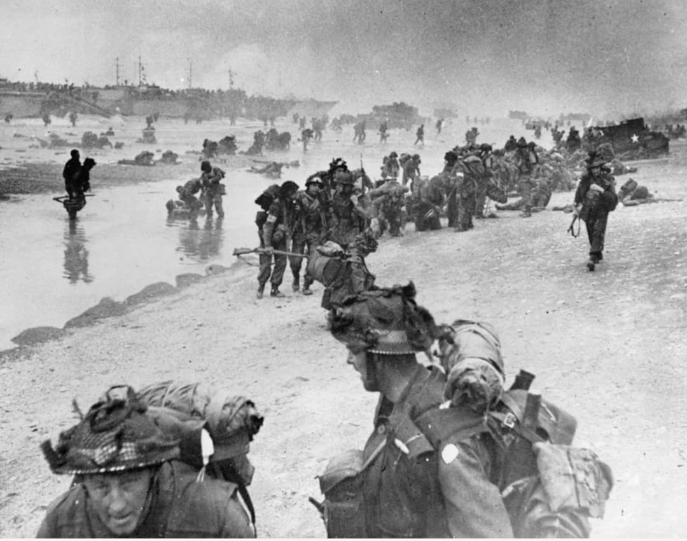
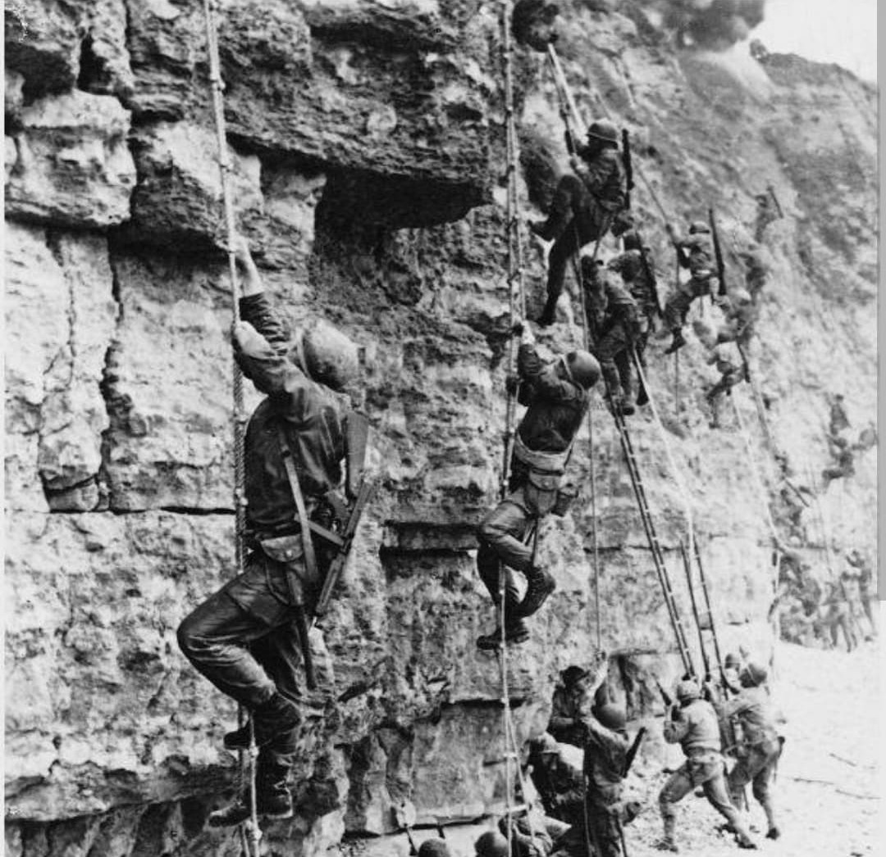

Le 6 juin 1944, les forces alliées lancent la plus grande opération amphibie de l’Histoire. Cinq plages reçoivent des noms de code : Utah, Omaha, Gold, Juno et Sword. À ces zones s’ajoute la Pointe du Hoc, attaquée par les Rangers américains. Chaque secteur possède son propre commandement, ses objectifs tactiques et ses difficultés.

Brigadier General Theodore Roosevelt Jr.
Utah est la plage la plus à l’ouest. Les troupes américaines débarquent légèrement décalées par rapport au point prévu, mais Roosevelt Jr. décide de maintenir l’assaut avec son célèbre « Nous allons commencer la guerre ici ». Environ 23 000 soldats débarquent, pour 200 morts. La progression est rapide vers l’intérieur des terres, notamment grâce aux parachutistes déjà engagés dans la nuit.

Lieutenant General Omar Bradley
Omaha est la plage la plus meurtrière du Débarquement. Les défenses allemandes y sont intactes : bunkers, mitrailleuses, mortiers, champs de mines. Les premières vagues américaines sont décimées. Malgré des pertes estimées entre 2 000 et 3 000 hommes, les unités parviennent à percer les défenses en fin d’après-midi, ouvrant la route vers Colleville et Saint-Laurent.

Lieutenant General Miles Dempsey
Gold est l’une des plages britanniques. Les chars amphibies et les unités d’ingénieurs permettent une progression efficace malgré une résistance initiale. Environ 25 000 soldats débarquent, pour 400 morts. Les Britanniques avancent vers Bayeux, qui devient la première grande ville libérée après le Débarquement.

Juno est la plage canadienne. Les premières vagues subissent un feu nourri, mais les Canadiens parviennent à percer les lignes allemandes et progressent rapidement vers l’intérieur. Environ 21 000 soldats débarquent, pour 1 200 morts et blessés. Les Canadiens avancent plus loin que toutes les autres forces alliées le 6 juin.

Sword est la plage la plus à l’est. Les Britanniques y débarquent avec 28 000 hommes, appuyés par les 177 Français du Commando Kieffer, seuls Français à débarquer le 6 juin. Les commandos prennent d’assaut les positions d’Ouistreham, dont le casino fortifié, ouvrant la route vers Caen. Pertes : 630 Britanniques, 10 Français.

Lieutenant Colonel James Earl Rudder
Position stratégique entre Utah et Omaha. Les Rangers du 2nd Battalion escaladent la falaise de 30 mètres sous le feu ennemi pour neutraliser une batterie de 155 mm. Sur 225 hommes, seuls 90 restent aptes au combat en fin de journée. Les canons, déplacés en retrait, sont retrouvés et détruits, empêchant un bombardement massif des plages américaines.